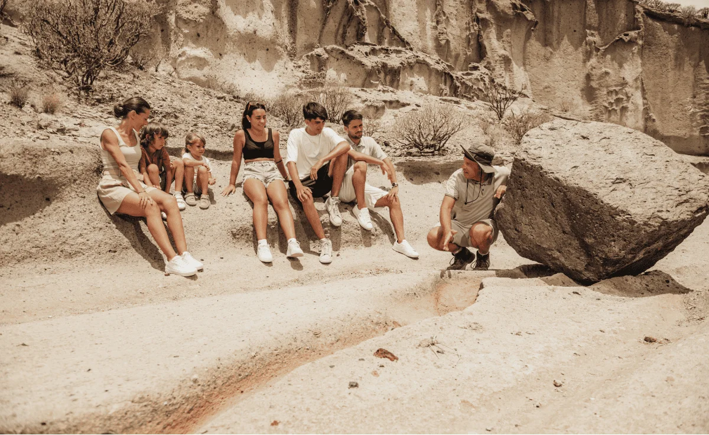

Outdoors + indoors
The complete visit
15 €Non-resident rate: 22,50 €
Resident rate for hotel guests
Adults (12+)22,50 €15 €
Children (3–11)14,50 €8 €
Tuesday to Saturday · 09:30
Duration: 3 hours
Limited places. Book in advance.
Explore the Environmental Reserve and complete your visit at the Interpretation Centre, Museum and Historical Experience Tunnel. Walk through the ravine to discover volcanic rock, drought-adapted plants, birds and the marks left by water and human activity.
Includes a walk on natural trails. Please bring suitable footwear, water and sun protection.
Book the complete visit